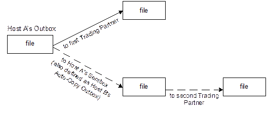

If you have two trading partners (i.e., hosts) configured, you can easily enhance your
configuration to automatically send files to the second trading partner after the files
have been successfully sent to the first trading partner using an "auto copy". Given Host A
(the original sender) and Host B (the additional sender), in most situations you would
perform the following steps to configure "auto copy":
- Add an "auto copy" action to Host B (steps 1-2 below).
- Configure Host A so that the files that have been sent are automatically deposited into
the file source location (i.e., the Outbox) for Host B's "auto copy" action (step 3
below).
- Configure the Host B "auto copy" action to automatically send the file when it is
copied from Host A (step 4 below).
The following diagram illustrates the flow of the file that is
sent using "Auto-Copy" (dotted lines signify dependence on successful completion of
the file being sent to the first Trading Partner):

Auto-Copy
Configuration
Follow the steps below to configure "auto copy".
- Create a new "auto copy" action for Host B.
- In the Host B tree, right mouse-click the "send" action and select
Clone.
A
new action called newsend is
created.
- Rename the new action to auto copy. (The name is arbitrary;
you can choose any name you want for your new
action.)
- In Host B's "auto copy" Action that you have just created, configure the PUT command
with an "autocopy" subfolder in the path and a wildcard ("*") in the file
name.
- Wildcard Note: Using a wildcard for the file name addresses the situation
where Host A sends multiple files with the same file name before Host B can send
the file. In that case, automatic versioning occurs (e.g.,
sendfile1.edi, sendfile2.edi, etc.) in Host
A's Sentbox, the file source location (i.e., Outbox) for Host B's "auto copy"
Action.
- Subfolder Note: Specifying the source path in the "auto copy" action
differentiates Host B's "auto copy" Outbox location
(…\hosts\outbox\HostB\autocopy) from the "normally used"
Outbox location (…\hosts\outbox\HostB).
- In the General tab for Host A, specify a Sentbox path that is the
same as Host B's Outbox
path.
- In order for Host B to immediately send the file after Host A has successfully sent the
file, configure the Host B "Auto Copy" action to run whenever the action has
a file to send.
- Right-click Host B's "Auto Copy" Action (in the Tree pane) and select
Schedule…
- A dialog box appears allowing you to schedule the action.
- Select Whenever the action has files to send and click
OK.